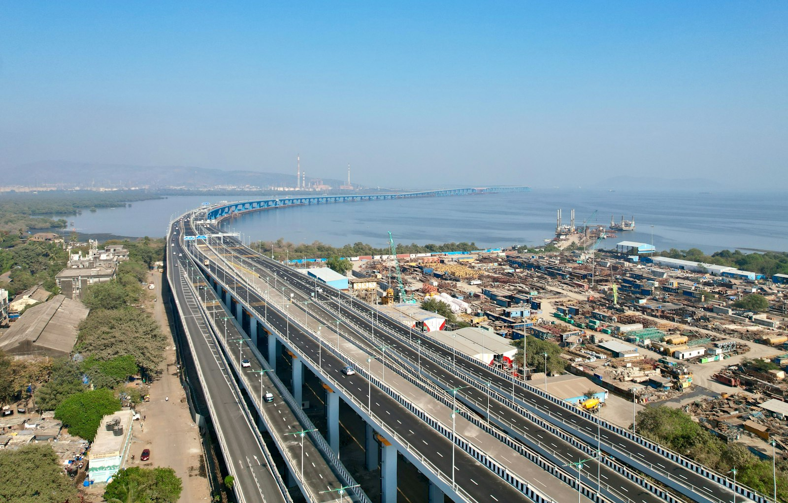

Foto ilustrativa
CASO 01
Demanda El Tarra
EL TARRA
Tipo de proceso: (por confirmar)
Área: Derecho de Infraestructura
Estado: (por confirmar)
Asesoría jurídica y litigios especializados.
CONOCE MÁS
QUIÉNES SOMOS
Somos una firma especializada en Derecho de Infraestructura, con enfoque en asesoría y litigios.
Nuestra práctica aborda diferentes asuntos relacionados con la infraestructura, desde el análisis jurídico de situaciones específicas hasta la representación de nuestros clientes en los procesos correspondientes.
Contamos además con experiencia en el análisis y desarrollo de mecanismos de defensa colectiva, cuando una misma problemática puede involucrar a múltiples afectados.
Nuestro enfoque combina conocimiento especializado, análisis jurídico y estrategia para abordar cada caso de acuerdo con sus particularidades.
CONOCE MÁSNUESTRA ESPECIALIDAD
Asuntos jurídicos relacionados con vías, sistemas y elementos asociados a la infraestructura vial.
Litigios y asesoría relacionados con construcciones, obras y las relaciones jurídicas que surgen alrededor de ellas.
Análisis de asuntos jurídicos relacionados con bienes que pueden verse involucrados o afectados en contextos de infraestructura.
Asuntos relacionados con terrenos y situaciones jurídicas vinculadas al desarrollo o impacto de infraestructura.
Situaciones jurídicas relacionadas con elementos, bienes y mobiliario asociados a espacios, obras o infraestructura.
Asesoría y litigios derivados de situaciones jurídicas relacionadas con obras y proyectos de infraestructura.
Análisis y representación frente a actuaciones de entidades y autoridades relacionadas con asuntos de infraestructura.
CASOS / LITIGIOS
Conoce algunos de los procesos y acciones que hacen parte de nuestra práctica jurídica.
CASO 01
EL TARRA
Tipo de proceso: (por confirmar)
Área: Derecho de Infraestructura
Estado: (por confirmar)
CASO 02
BOSCONIA
Tipo de proceso: (por confirmar)
Área: Derecho de Infraestructura
Estado: (por confirmar)
BLOG
(pendiente — próximamente artículos y noticias del sector)
Únete a la acción de grupo.
Llena el formulario para analizar la información suministrada y validar si tu caso cumple con las condiciones del proceso.